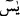

sâdece birisini alan, ilâhî mârifet dâiresinin hâricinde kalır.
O halde gerekleri ve hakikatleriyle bu harfler hakkındaki bilgi hakîkatte Allah’a,
Peygamber (a.s.)’a ve kâmil vârisleri olan âlimlere havale edilir. Bu vâris âlimlerden
bazıları bu harflerin mânâlarını te’vil cihetine gitmiş ve “Hurûf-i mukattaadan olan her
harf Allah Teâlâ’nın isimlerinden bir isimden alınmıştır.” demiştir.
Arapçada kelimenin bir kısmını zikretmekle yetinmek alışılagelmiş bir husustur.
Bundan dolayı İbn Abbas (r.anhümâ): “Elif lâm râ”nın mânâsı, “Ben Allah’ım,
görürüm.” demektir.” demiştir. Yine ondan “Elif lâm râ”nın Rahmân’ın harflerinden
olduğu, “Elif lâm râ”, “Hâ mîm” ve “Nûn” harfleri bir araya getirilince “er-Rahmân”
isminin harflerini teşkil ettiği rivâyet edilmiştir.
et-Te’vîlâtü’n-Necmiyye’de şöyle denir: “Elif lâm râ” sözünde iki işâret vardır:
Hak’dan Hak için ve kulu Mustafâ’ya ve habîbi Müctebâ’ya işâret. Hak’dan Nebîsi için
ve O’na (a.s.) işâret.
Birinci işaret, Allah tarafından şu mânâda bir yemindir: Sen yoklukta iken ezelde sana
olan nimetlerime ve varlıkta sana olan lütfuma, ezelden ebede senin için olan rahmet ve
merhametime yemin olsun.
İkinci işâret de şöyle bir yemindir: İlk yarattığım şey olan rûhunu yarattığım zaman
bana olan ünsiyetine yemin ederim ki o zaman bizimle beraber bir üçüncü kimse yoktu.
Yokluktan çıkmak için seni çağırdığım zaman bana: “Lebbeyk: Buyur ya Rabbi, emrine
âmâdeyim.” diye cevap verdin. Ben de sana hitap ettim ve “” yâni: “Ey Seyyid!”
dedim. Sen de: “Lebbeyk ve sa‘deyk ve’l-hayru külluhû bi-yedeyk: Emrine icâbet
ettim, buyur, saadetler dilerim, tüm hayırlar senin elindedir.” dedin. Yine Ben senin
nefsine: “Rabb’ine dön!” (el-Fecr, 89/28) dediğim zaman senin senden Bana dönüşüne
yemin olsun.”
“İşte bunlar,” bu sûrenin ihtivâ ettiği âyetler “o hikmetli Kitab’ın âyetleridir.” yani
hikmetler içeren Kur’ân’ın âyetleridir. Bu mânâ, hakîm kelimesinin “hikmetler sahibi”
anlamına alınması durumundadır. Çünkü Allah Teâlâ, bütün hüküm ve hikmetleri o
kitabın içerisine koymuştur. “Yaş kuru hiçbir şey yoktur ki apaçık bir kitapta
bulunmasın.” (el-En‘âm, 6/59)
Hikâye edilir ki İmam Muhammed (r.h.) bir zaman fakirlikten sıkıntıya düşmüştü. Bir
gün bozacının yanına varıp: “Bana içecek bir şey verirsen sana iki fıkıh meselesi
öğretirim.” dedi. Bozacı: “Benim fıkıh meselesine ihtiyacım yok.” diye cevap verdi.
Ağır pahalı incinin kadr ü kıymetini avam ne bilir
Ey Hâfız, eşi emsâli olmayan cevheri havastan başkasına verme
Tevâfuk bu ya o bozacı dünyada bulunan çeyizlerin hepsini kızına vermezse karısının
üç talakla boş olacağına yemin etti. Âlimlere başvurdu. Onlar da bunun mümkün
olmadığını bildirerek yemininin bozulacağına fetvâ verdiler. Bunun üzerine İmam
Muhammed’in yanına vardı. İmam da: